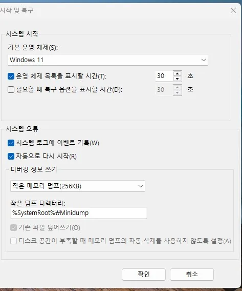
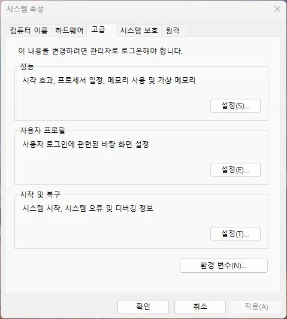

BSOD DUMP & EVENT LOG ANALYZER
미니덤프(.dmp)·이벤트 로그(.evtx) 분석기
블루스크린 후 생긴 덤프(.dmp)와 이벤트 뷰어에서 내보낸 이벤트 로그(.evtx)를 함께 올리면, STOP 코드와 PCIe 오류(WHEA-Logger) 폭주를 엮어 원인 후보와 점검 순서를 알려줍니다. 둘 중 하나만 올려도 됩니다.
미니덤프 파일 위치
블루스크린 발생 후 C:\Windows\Minidump\ 폴더 안에 .dmp 파일이 생성됩니다.
파일명 예시: 072424-4312-01.dmp · 날짜·시간·번호 순 · 가장 최근 파일을 업로드하세요.
이벤트 로그(.evtx)는 이벤트 뷰어(eventvwr.msc) → Windows 로그 → 시스템을 선택하고, 오른쪽 모든 이벤트를 다른 이름으로 저장으로 내보냅니다. 증상이 있었던 날의 로그가 좋습니다.
로그 수집 스크립트
이벤트 로그를 손으로 내보내다 필터가 걸리거나 기간이 빠지는 실수를 막고, 덤프·하드웨어 정보까지 한 번에 모읍니다. 시스템 로그(필터 없음)·미니덤프·하드웨어 요약(그래픽 PCIe 링크 폭, 디스크 상태, 메모리, BIOS, 덤프·전원 설정)이 바탕화면 폴더 하나로 정리됩니다.
- collect-pc-logs.ps1 내려받기 (텍스트 파일이라 내용을 먼저 확인할 수 있습니다)
- 사용자 PC에서 관리자 권한 PowerShell을 열고 다운로드 폴더에서 실행합니다.
powershell -NoProfile -ExecutionPolicy Bypass -File .\collect-pc-logs.ps1 - 바탕화면에 생긴
itsvc-collect-…폴더의System.evtx,Minidump의 .dmp 파일들,hardware.json을 아래에 한꺼번에 올립니다.
🔒읽기 전용입니다. 인터넷으로 전송하지 않고 설정을 바꾸거나 파일을 지우지 않으며, 컴퓨터 이름·사용자 이름·시리얼·MAC 주소는 수집하지 않습니다. 관리자 권한이 아니면 미니덤프 복사와 디스크 SMART 상세가 빠질 수 있습니다.
.dmp·.evtx·hardware.json 파일을 끌어다 놓거나 클릭해서 선택하세요
수집 스크립트 결과 폴더의 파일을 한 번에 선택하면 됩니다 · 덤프 최대 8개, 이벤트 로그 1개, hardware.json 1개
증상 문진 (선택) — 사용자가 겪는 증상을 고르면 판단에 반영됩니다
문진은 로그·덤프에 근거가 있는 원인 후보의 가중치만 조정하며, 증상만으로 진단하지 않습니다.
파일을 분석 중입니다…
BSOD STOP CODE
—
로드된 드라이버·모듈 목록 (0개)
| 모듈명 | 버전 | 크기 | 베이스 주소 |
|---|
여러 덤프의 공통점
🔒모듈 경로는 파일명만 남기고 분석되어 사용자 이름·개인 경로가 포함되지 않습니다.
미니덤프란 무엇인가
블루스크린이 발생하면 Windows는 중단 직전의 메모리 상태 일부를 파일로 남깁니다. 이것이 미니덤프이며, 어떤 정지 코드로 멈췄는지와 그 순간 메모리에 올라와 있던 드라이버 목록이 들어 있습니다. 화면에 잠깐 스쳐 지나간 정지 코드를 놓쳤더라도 이 파일이 남아 있으면 확인할 수 있습니다.
파일 하나는 보통 수백 KB 정도이며, 블루스크린이 날 때마다 새로 쌓입니다. 파일명의 앞 여섯 자리가 발생 날짜(월일년)이므로 여러 개가 있다면 가장 최근 것부터 확인하는 것이 좋습니다.
Minidump 폴더가 비어 있다면
블루스크린이 분명히 났는데 C:\Windows\Minidump에 파일이 없는 경우가 있습니다.
덤프 생성이 꺼져 있거나 저장 조건이 갖춰지지 않은 상태이며, 아래를 확인하면 다음 발생 때부터 파일이 남습니다.
- 덤프 생성 설정 확인 — 설정 → 시스템 → 정보 → 고급 시스템 설정 → 시작 및 복구
설정에서 디버깅 정보 쓰기가 소형 메모리 덤프 이상으로 지정돼 있어야 합니다.
없음으로 되어 있으면 덤프가 만들어지지 않습니다.

- 페이지 파일 확인 — 같은 화면의 성능 설정 → 고급 → 가상 메모리에서
자동 관리가 켜져 있는지 봅니다. 페이지 파일이 없으면 덤프를 기록할 공간이 없습니다. 시스템 속성의 고급 탭에서 성능 설정 버튼을 찾을 수 있습니다.

- 디스크 여유 공간 확보 — 시스템 드라이브 여유 공간이 부족하면 기록에 실패합니다.
- 정리 도구 확인 — 자동 청소 프로그램이 덤프 파일을 지우도록 설정돼 있는지 확인하세요.
덤프 생성 자체가 실패한 경우라면 Volmgr 162 기록이 남아 있을 수 있습니다.
분석 결과를 읽는 법
- 정지 코드(STOP 코드) — 어떤 종류의 오류인지 알려주는 분류입니다. 같은 코드라도 원인은 여러 가지일 수 있어 코드만으로 부품을 확정하지는 못합니다.
- 원인으로 지목된 드라이버 — 중단 시점에 관여한
.sys파일입니다. 다만 지목됨이 곧 범인은 아닙니다. 다른 드라이버가 망가뜨린 메모리를 마지막에 건드린 파일이 대신 잡히는 경우도 흔합니다. - 여러 덤프의 공통점 — 판단에서 가장 신뢰할 만한 단서입니다. 서로 다른 시점의 덤프 3~4개에서 같은 드라이버가 반복해 나오면 그 드라이버일 가능성이 높고, 매번 다른 이름이 나온다면 특정 드라이버보다 메모리·전원·발열처럼 전체 안정성 문제를 의심하는 편이 맞습니다.
- 종합 판단 — 덤프와 이벤트 로그가 같은 방향을 가리킬 때 원인 후보를 가능성 순으로 정리해 보여줍니다. '근거 일치도'는 고장 확률이 아니라, 올린 자료들이 서로 얼마나 맞물리는지를 뜻합니다. 부품 고장은 교차 테스트로 확인해야 합니다.
- WHEA-Logger(PCIe 오류) 발생 위치 — 어느 슬롯·장치에서 오류가 났는지와 오류 유형을 보여줍니다. 수신 오류·재전송 오류처럼 링크 신호 품질을 뜻하는 유형이 수천 건씩 반복되면 접촉·케이블·슬롯 문제를 의심합니다. 자세한 의미는 WHEA-Logger 17을 참고하세요.
덤프와 이벤트 로그를 함께 보는 이유
덤프는 시스템이 멈춘 순간만 담고, 이벤트 로그는 그 전에 무슨 일이 있었는지를 담습니다. 예를 들어 그래픽 관련 블루스크린(VIDEO_TDR_FAILURE, 0x116) 덤프가 반복되는 PC에서 같은 기간 이벤트 로그에 그래픽카드 슬롯 하나에서만 PCIe 수정 오류가 만 건 넘게 쌓여 있다면, 드라이버를 다시 깔기 전에 슬롯 접촉·링크 속도·라이저 케이블부터 확인해야 한다는 방향이 잡힙니다. 덤프만으로는 이 차이를 구분하기 어렵습니다. 화면이 꺼지는 증상이라면 그래픽 드라이버 응답 없음 가이드도 함께 보세요.
자동 분석의 한계
이 도구는 덤프 헤더와 로드된 모듈 정보를 읽어 정지 코드와 관련 드라이버를 정리해 보여줍니다.
Microsoft의 WinDbg로 !analyze -v를 실행했을 때 나오는 호출 스택 수준의 정밀 분석과는 다릅니다.
특히 커널·작은 메모리 덤프(PAGEDU64) 형식은 헤더의 정지 코드·매개변수와 드라이버 이름 목록만 읽고,
원인 드라이버를 특정하지는 않습니다. 원인이 좁혀지지 않으면 WinDbg로 같은 파일을 여는 편이 더 많은 정보를 줍니다.
이벤트 로그 분석은 올린 파일에 포함된 기간만 봅니다. 증상이 있었던 시각이 로그 범위 밖이면 원인 단서가 빠질 수 있으므로, 가능하면 증상이 있었던 날의 로그를 내보내세요. 결과는 규칙 기반 추정이라 부품 고장을 확정하지 않습니다.
또한 덤프는 중단된 순간의 기록이라 그 이전에 무엇이 잘못됐는지까지는 담지 않습니다. 정지 코드가 매번 달라진다면 이벤트 뷰어의 WHEA-Logger 기록과 메모리 검사 결과를 함께 보는 것이 좋습니다.
자주 묻는 질문
- 업로드한 파일은 어떻게 처리되나요? 분석 서버에서 정지 코드·모듈 목록·이벤트 집계를 읽은 뒤 즉시 삭제합니다. 저장하거나 다른 곳으로 전송하지 않습니다.
- 이벤트 로그(.evtx)는 어떻게 내보내나요? 가장 쉽고 실수가 없는 방법은 위의 로그 수집 스크립트입니다(필터 없이 기간만 지정해 내보내고 덤프·하드웨어 정보까지 함께 모읍니다). 손으로 내보낸다면
eventvwr.msc를 열고 Windows 로그 → 시스템을 선택한 뒤, 오른쪽 모든 이벤트를 다른 이름으로 저장을 눌러.evtx로 저장합니다. 용량이 80 MB를 넘으면 현재 로그 필터링으로 증상이 있었던 기간만 남긴 뒤 저장하세요. - 이벤트 로그에 개인 정보가 들어 있나요? 로그 원본에는 컴퓨터 이름이나 계정 정보가 포함될 수 있습니다. 이 분석기는 이벤트 종류별 집계와 하드웨어 오류 요약만 결과로 돌려주고, 컴퓨터 이름·사용자 이름은 결과에 담지 않습니다.
- 미니덤프에 개인 정보가 들어 있나요? 소형 메모리 덤프는 전체 메모리가 아니라 커널 영역의 일부만 담습니다. 다만 실행 중이던 프로그램 이름이나 경로에 사용자 이름이 포함될 수는 있습니다. 전체 메모리 덤프는 훨씬 많은 내용을 담으므로 외부에 올릴 때 주의해야 합니다.
- 덤프 파일을 지워도 되나요? 이미 확인을 마쳤다면 지워도 시스템 동작에는 영향이 없습니다. 다만 문제가 계속되는 중이라면 여러 개를 비교할 수 있으니 해결될 때까지 남겨 두는 편이 낫습니다.
- 정지 코드는 나오는데 드라이버가 표시되지 않습니다. 덤프에 원인 모듈 정보가 담기지 않은 경우입니다. 이때는 이벤트 뷰어 진단에서 같은 시각의 기록을 함께 확인해 보세요.